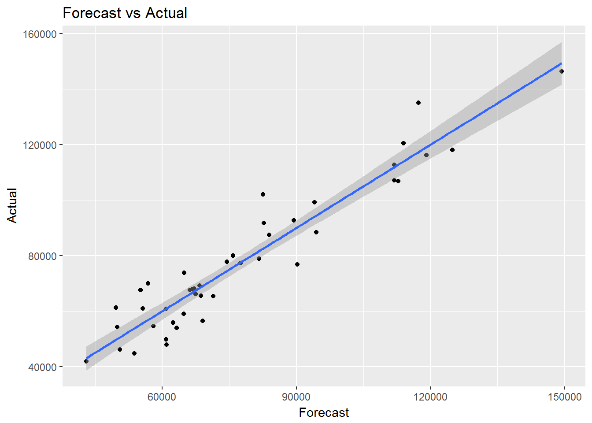

library(alr3)
library(tidyverse)data(water)
str(water)## 'data.frame': 43 obs. of 8 variables:
## $ Year : int 1948 1949 1950 1951 1952 1953 1954 1955 1956 1957 ...
## $ APMAM : num 9.13 5.28 4.2 4.6 7.15 9.7 5.02 6.7 10.5 9.1 ...
## $ APSAB : num 3.58 4.82 3.77 4.46 4.99 5.65 1.45 7.44 5.85 6.13 ...
## $ APSLAKE: num 3.91 5.2 3.67 3.93 4.88 4.91 1.77 6.51 3.38 4.08 ...
## $ OPBPC : num 4.1 7.55 9.52 11.14 16.34 ...
## $ OPRC : num 7.43 11.11 12.2 15.15 20.05 ...
## $ OPSLAKE: num 6.47 10.26 11.35 11.13 22.81 ...
## $ BSAAM : int 54235 67567 66161 68094 107080 67594 65356 67909 92715 70024 ...socal.water <- water[ , -1]Correlations:
water.cor <- cor(socal.water)
water.cor## APMAM APSAB APSLAKE OPBPC OPRC OPSLAKE
## APMAM 1.0000000 0.82768637 0.81607595 0.12238567 0.1544155 0.10754212
## APSAB 0.8276864 1.00000000 0.90030474 0.03954211 0.1056396 0.02961175
## APSLAKE 0.8160760 0.90030474 1.00000000 0.09344773 0.1063836 0.10058669
## OPBPC 0.1223857 0.03954211 0.09344773 1.00000000 0.8647073 0.94334741
## OPRC 0.1544155 0.10563959 0.10638359 0.86470733 1.0000000 0.91914467
## OPSLAKE 0.1075421 0.02961175 0.10058669 0.94334741 0.9191447 1.00000000
## BSAAM 0.2385695 0.18329499 0.24934094 0.88574778 0.9196270 0.93843604
## BSAAM
## APMAM 0.2385695
## APSAB 0.1832950
## APSLAKE 0.2493409
## OPBPC 0.8857478
## OPRC 0.9196270
## OPSLAKE 0.9384360
## BSAAM 1.0000000pairs(socal.water)## Modeling and Evaluation
library(leaps)attach(socal.water)fit <- lm(BSAAM ~ ., data = socal.water)
summary(fit)##
## Call:
## lm(formula = BSAAM ~ ., data = socal.water)
##
## Residuals:
## Min 1Q Median 3Q Max
## -12690 -4936 -1424 4173 18542
##
## Coefficients:
## Estimate Std. Error t value Pr(>|t|)
## (Intercept) 15944.67 4099.80 3.889 0.000416 ***
## APMAM -12.77 708.89 -0.018 0.985725
## APSAB -664.41 1522.89 -0.436 0.665237
## APSLAKE 2270.68 1341.29 1.693 0.099112 .
## OPBPC 69.70 461.69 0.151 0.880839
## OPRC 1916.45 641.36 2.988 0.005031 **
## OPSLAKE 2211.58 752.69 2.938 0.005729 **
## ---
## Signif. codes: 0 '***' 0.001 '**' 0.01 '*' 0.05 '.' 0.1 ' ' 1
##
## Residual standard error: 7557 on 36 degrees of freedom
## Multiple R-squared: 0.9248, Adjusted R-squared: 0.9123
## F-statistic: 73.82 on 6 and 36 DF, p-value: < 2.2e-16sub.fit <- regsubsets(BSAAM ~ ., data = socal.water)best.summary <- summary(sub.fit)# split the plotting window in a grid of one by two
par(mfrow = c(1,2))
plot(best.summary$cp, xlab = "number of features", ylab = "cp")
plot(sub.fit, scale = "Cp")best.summary$adjr2## [1] 0.8777515 0.9001619 0.9185369 0.9168706 0.9146772 0.9123079fit.2 <- lm(BSAAM ~ APSLAKE + OPSLAKE, data = socal.water)
summary(fit.2)##
## Call:
## lm(formula = BSAAM ~ APSLAKE + OPSLAKE, data = socal.water)
##
## Residuals:
## Min 1Q Median 3Q Max
## -13335.8 -5893.2 -171.8 4219.5 19500.2
##
## Coefficients:
## Estimate Std. Error t value Pr(>|t|)
## (Intercept) 19144.9 3812.0 5.022 1.1e-05 ***
## APSLAKE 1768.8 553.7 3.194 0.00273 **
## OPSLAKE 3689.5 196.0 18.829 < 2e-16 ***
## ---
## Signif. codes: 0 '***' 0.001 '**' 0.01 '*' 0.05 '.' 0.1 ' ' 1
##
## Residual standard error: 8063 on 40 degrees of freedom
## Multiple R-squared: 0.9049, Adjusted R-squared: 0.9002
## F-statistic: 190.3 on 2 and 40 DF, p-value: < 2.2e-16socal.water["Actual"] <- water$BSAAM
socal.water$Forecast <- predict(fit.2)ggplot(data = socal.water, aes(x = Forecast, y = Actual)) + geom_point() + geom_smooth(method = lm) +
labs( title = "Forecast vs Actual")
library(MASS)
library(tidyverse)
data(biopsy)
glimpse(biopsy)## Observations: 699
## Variables: 11
## $ ID <chr> "1000025", "1002945", "1015425", "1016277", "1017023", "...
## $ V1 <int> 5, 5, 3, 6, 4, 8, 1, 2, 2, 4, 1, 2, 5, 1, 8, 7, 4, 4, 10...
## $ V2 <int> 1, 4, 1, 8, 1, 10, 1, 1, 1, 2, 1, 1, 3, 1, 7, 4, 1, 1, 7...
## $ V3 <int> 1, 4, 1, 8, 1, 10, 1, 2, 1, 1, 1, 1, 3, 1, 5, 6, 1, 1, 7...
## $ V4 <int> 1, 5, 1, 1, 3, 8, 1, 1, 1, 1, 1, 1, 3, 1, 10, 4, 1, 1, 6...
## $ V5 <int> 2, 7, 2, 3, 2, 7, 2, 2, 2, 2, 1, 2, 2, 2, 7, 6, 2, 2, 4,...
## $ V6 <int> 1, 10, 2, 4, 1, 10, 10, 1, 1, 1, 1, 1, 3, 3, 9, 1, 1, 1,...
## $ V7 <int> 3, 3, 3, 3, 3, 9, 3, 3, 1, 2, 3, 2, 4, 3, 5, 4, 2, 3, 4,...
## $ V8 <int> 1, 2, 1, 7, 1, 7, 1, 1, 1, 1, 1, 1, 4, 1, 5, 3, 1, 1, 1,...
## $ V9 <int> 1, 1, 1, 1, 1, 1, 1, 1, 5, 1, 1, 1, 1, 1, 4, 1, 1, 1, 2,...
## $ class <fctr> benign, benign, benign, benign, benign, malignant, beni...biopsy$ID <- NULL